GFlowNet Playground
Theory and Examples for an Intuitive Understanding

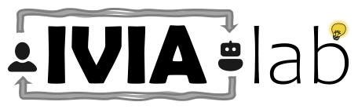
Why GFlowNets?
Drug discovery searches ~1060 molecules, and a single best guess may fail later. GFlowNets build objects step by step and learn to sample many diverse, high-reward candidates, in proportion to their reward.
What the article offers
- Core concepts, foundations and common training pitfalls
- A Tetris example and an interactive Playground
- An optional notebook implementing every concept
Learning Path
Core Concepts, Illustrated
Building objects step by step: Tetris
A state is the current board, an action places a tetromino (piece, rotation, column), and the reward is the number of filled cells at the end of a trajectory.
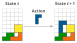
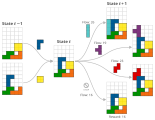
Flow through the DAG
Like water through pipes, flow runs from the source s0 to the final objects. Training matches inflow and outflow at every state:
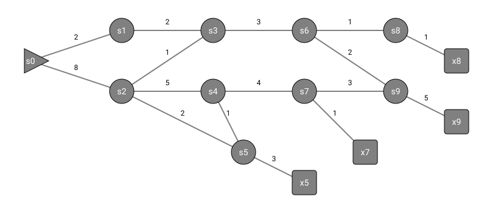
Compared to RL and MCMC
RL maximises reward and follows one path to x9. The GFlowNet spreads flow so that P(x) = R(x)/Z.
MCMC hops between neighbouring objects, so its samples are correlated; a GFlowNet builds each sample from s0.
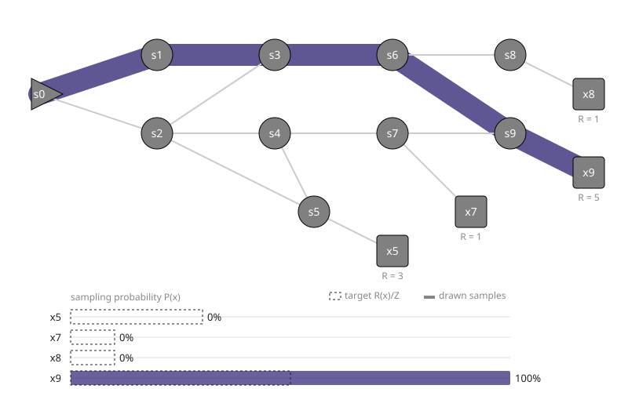
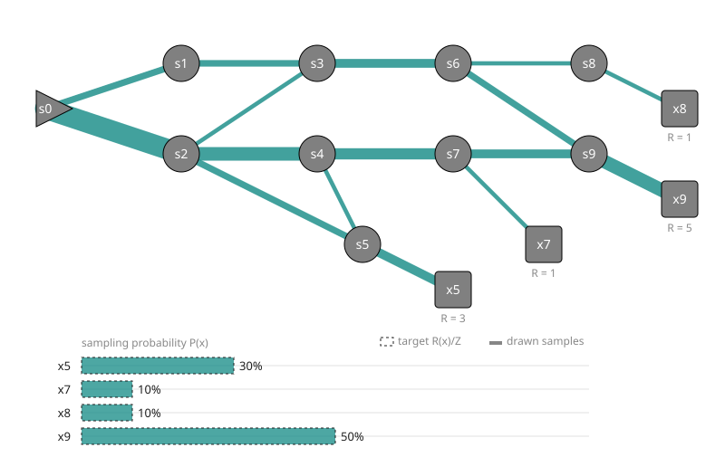
Learning by Doing: the Playground
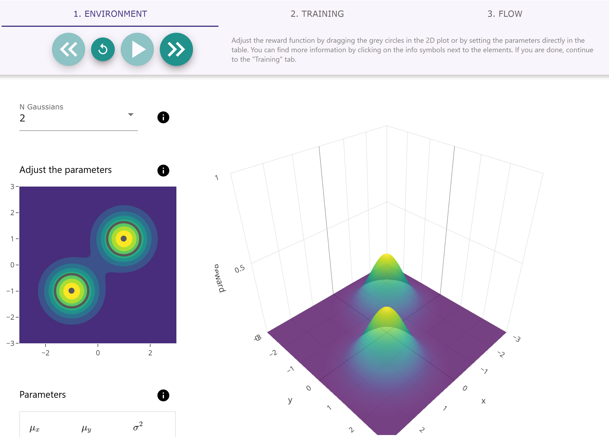
- 1. Environment drag Gaussians to shape the reward
- 2. Training set hyperparameters, train, watch samples
- 3. Flow see the learned flow as a vector field
The reward is a mixture of Gaussians on a 2D plane; the policy outputs a Gaussian over steps. Readers replay real training runs, then fix the failures themselves.
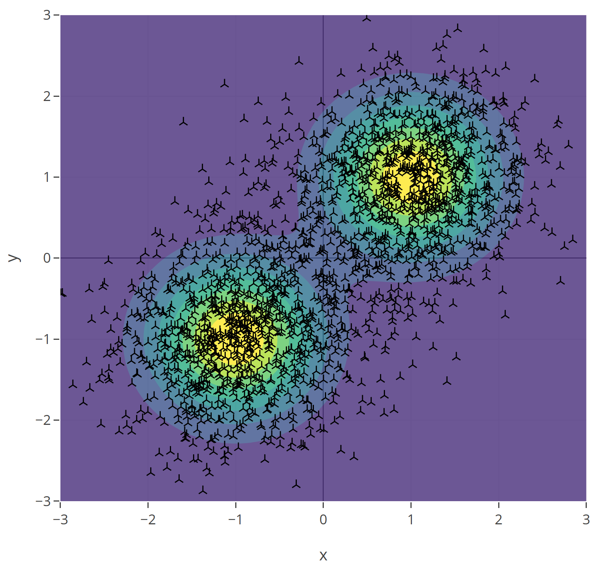
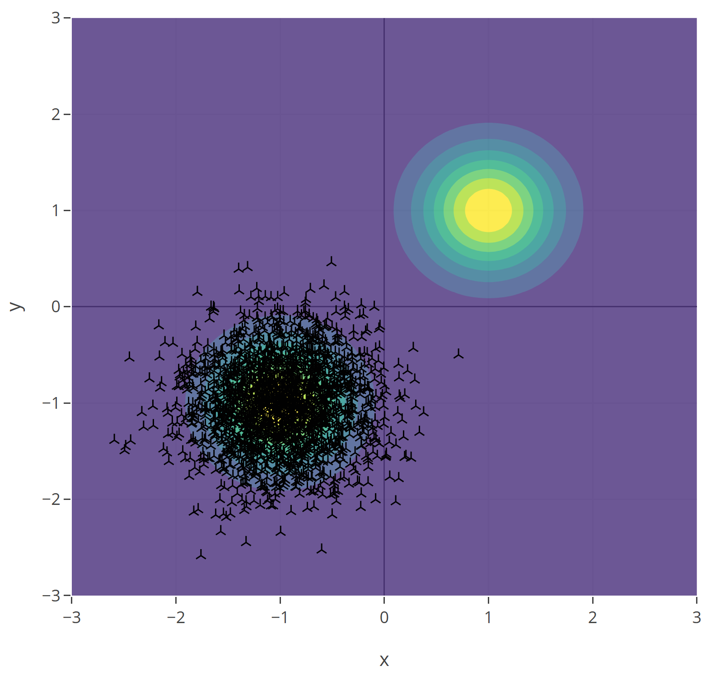
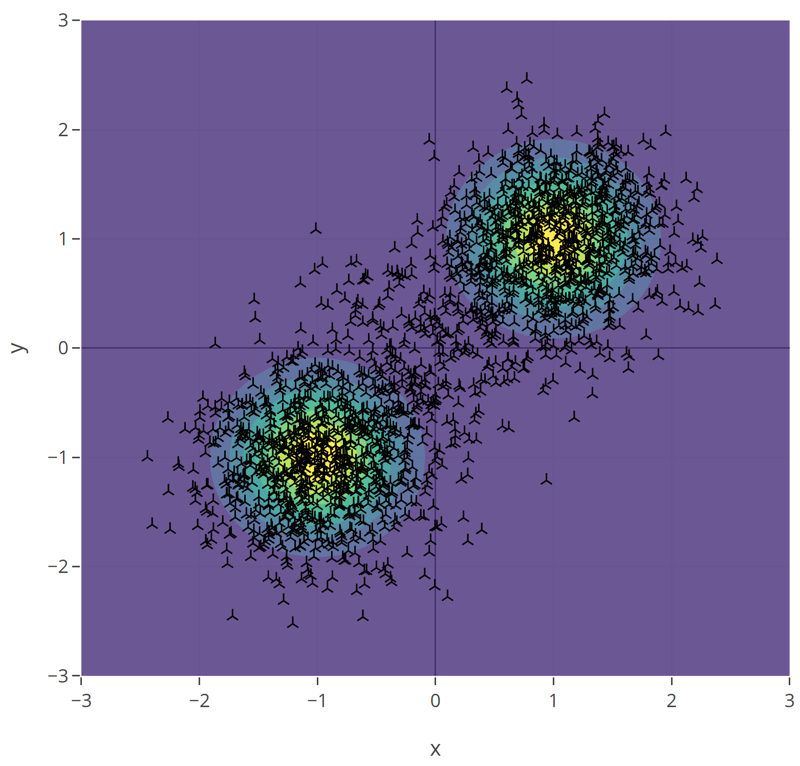
Accompanying notebook
Optional Colab notebook following the article’s structure; buttons in the article jump to the matching cells.
- Example environment, flow matching and trajectory balance losses
- Continuous plane environment and training loop
- Mode collapse and off-policy training